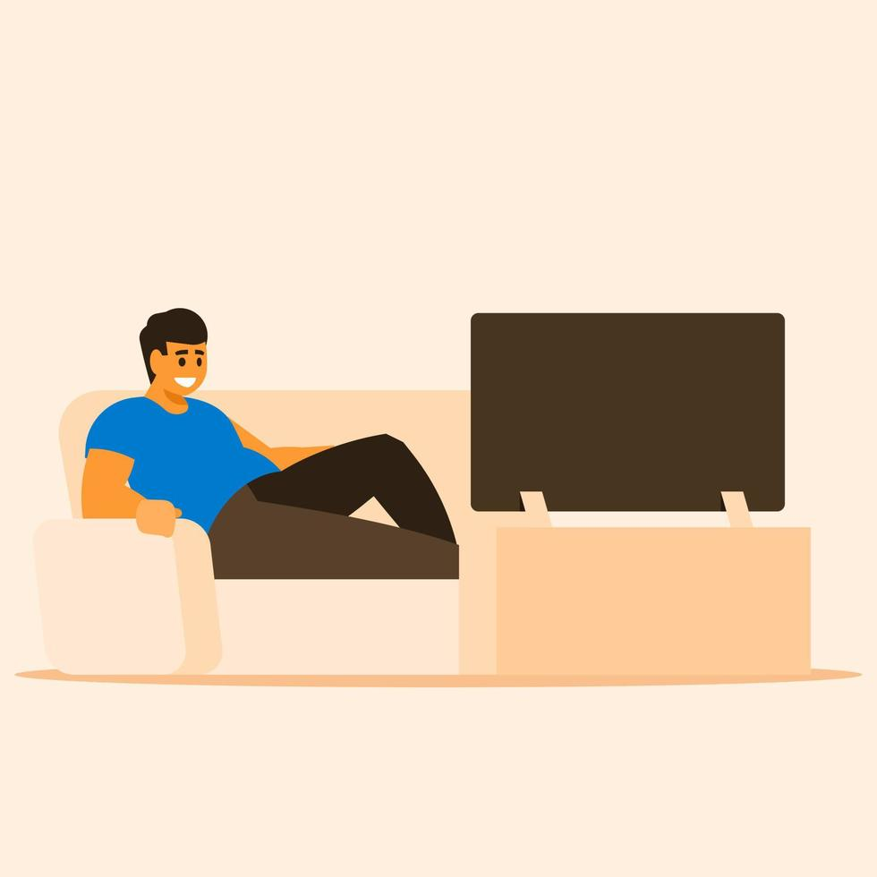
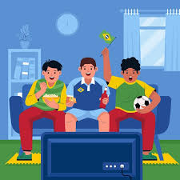

Oque faço:
Trabalho no ramo da logística e estudo na UNINTER
Data de Nascimento: 27/09/1999
Olá mundo ! Meu nome é Patrick Gabriel de Sousa Monteiro atualmente tenho 25 anos mais irei fazer 26 mês que vem, estudo na universidade UNINTER realizando o curso de Análise e Desenvolvimento de Sistemas, e este é o meu trabalho de desenvolvimento Web.
Estou gostando muito desse curso e estou empolgado, sempre algo novo para aprender e estudar. Já tenho algumas ideias da área que irei me especializar como por exemplo desenvolvimento WEB, Banco de dados entre outros.
Tenho também vários hobbies que gosto de fazer no meu tempo livre e descreverei eles em uma lista abaixo:
- Jogar Videogame.
- Assistir séries, filmes e animes.
- Ler HQS.
- Acompanhar futebol, Fórmula 1 e outros esportes.
- Ouvir música e podcast.

